消屏器App
消息通知管理+屏幕自动点击
本软件可自定义创建法则(消息法则和点击法则)来达到自己想要的效果
一,消息通知管理教程(消息法则)
我们随便以任一App为例子来举例讲解:
比如WhatsApp,我们现在想要的效果是:每当该软件的新消息通知到来时,如果该消息通知中包含指定内容〖喝酒〗且不能包含有指定内容〖今晚〗,那么,该条消息通知
的内容就会自动播报出来,同时从通知栏上自动清理,且手机也会播放一首歌曲来提醒我们.
理论上任何软件都是支持的,设置格式也都大同小异,要学会举一反三哦!
①点击消息记录右侧圆环,可查看消息通知历史记录或创建消息法则
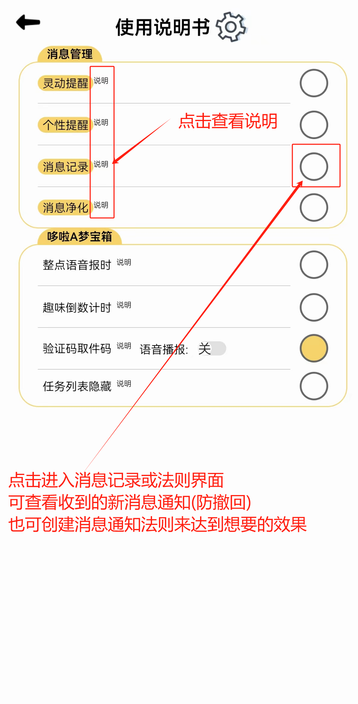②在本机应用列表中,可搜索指定的应用进行个性化设置和创建法则
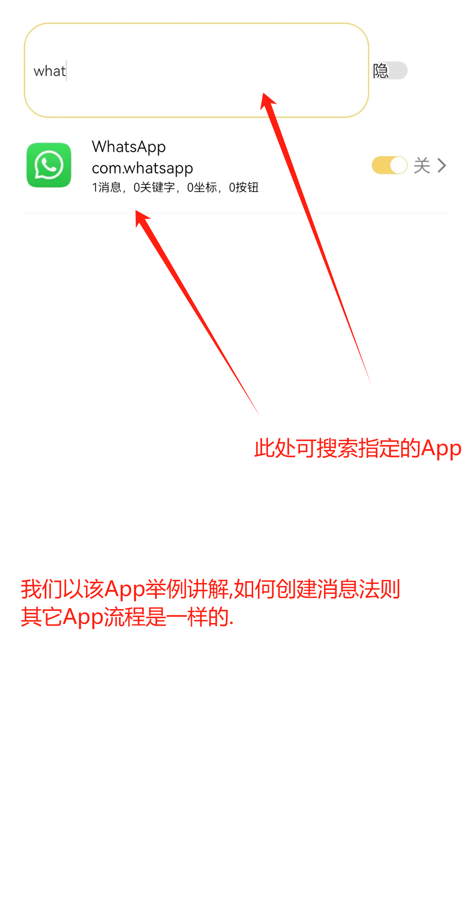③点击〖消息法则〗按钮,可创建新的法则或编辑已创建的法则
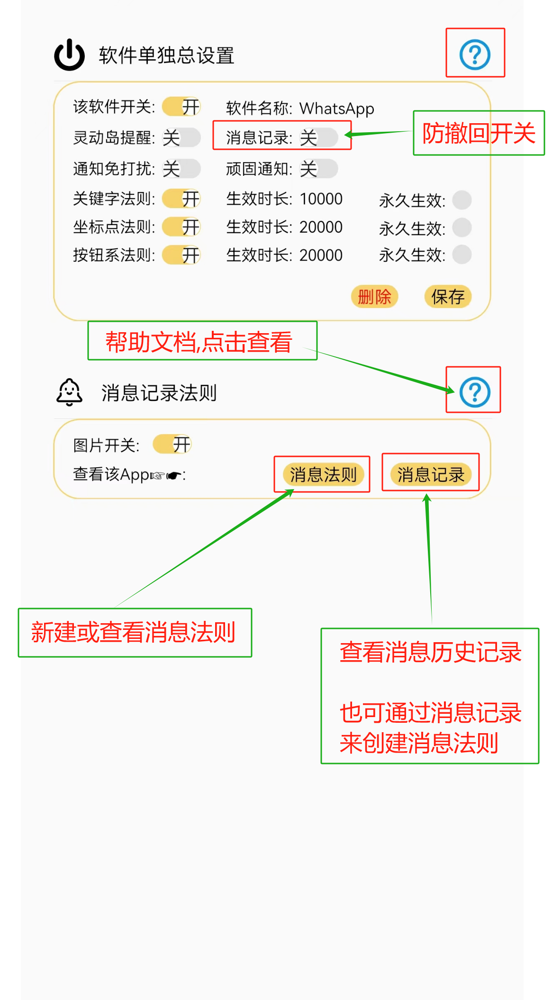④每个开关或设置项,如有不明白的可点击右侧的?图标
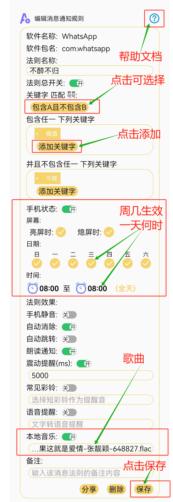⑤已创建法则列表界面,点击可再次编辑
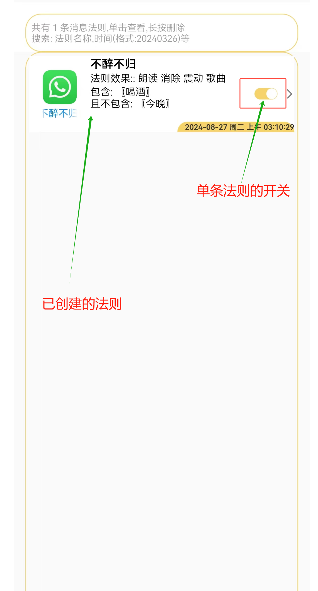消息记录(防撤回)教程
⒈按照时间先后顺序查看各个软件的消息历史记录☟☟
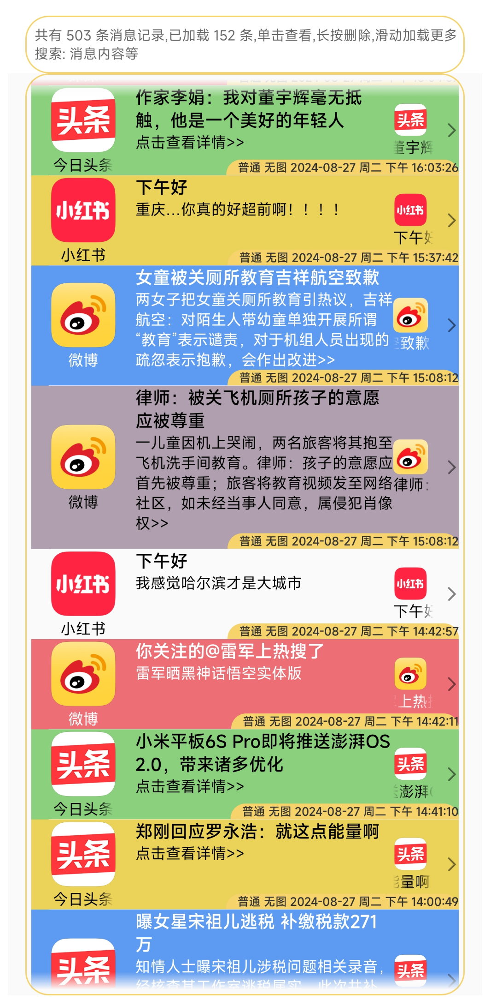⒉只查看某个软件的消息历史记录☟☟
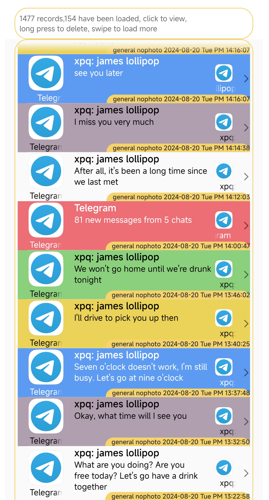⒊具体设置步骤(单个软件开启和一键开启全部软件):☟☟
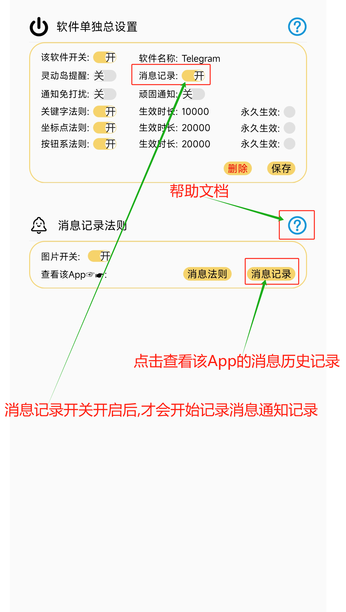 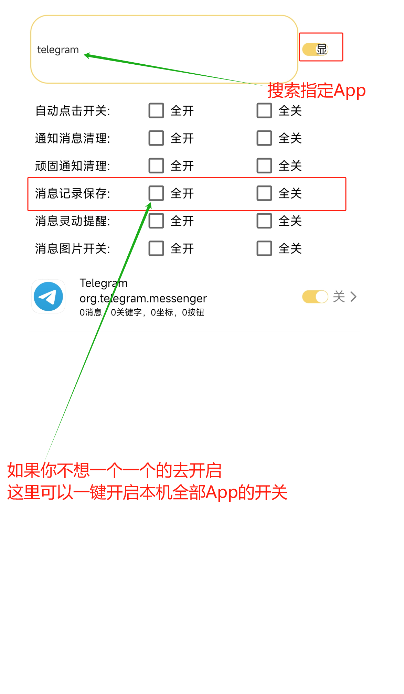二,屏幕自动点击教程(点击法则)
我们随便以任一App为例子来举例讲解:
比如该软件每次打开时,都会弹出一个开启无障碍服务的对话窗口,我们现在想要的效果是:软件每次打开时,该对话框的OK按钮能被自动点击,不需要我们手动的点击一下才跳转开启,省去机械重复性的操作,这样就方便省事多了.
理论上任何软件都是支持的(除非该软件屏蔽了辅助服务),设置格式也都大同小异,要学会举一反三哦!
①打开屏幕自动点击开关,并呼出创建法则的悬浮窗
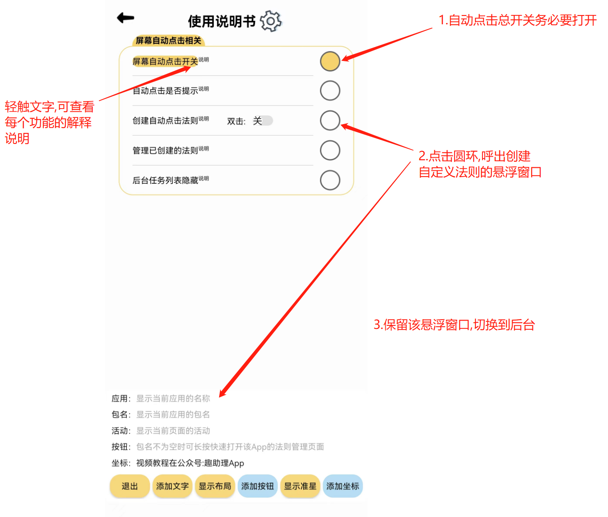②保持悬浮窗口不被关闭,然后打开需要被点击的软件(也即切换到需要自动点击的界面)
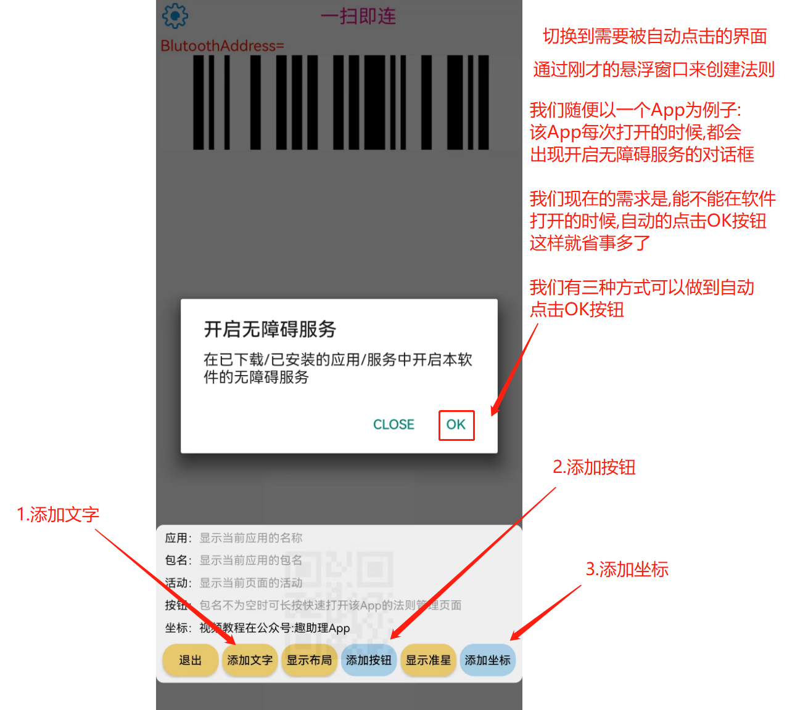③.关键字法则☟☟:
1.点击上图②悬浮窗中的〖添加文字〗按钮 呼出自定义输入文字对话框,输入需要的关键字